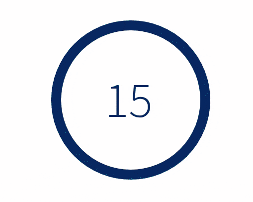

<!DOCTYPE html>
<html lang="en">

<head>
    <title>Reverse Correlation Study</title>
    <meta charset="UTF-8">

    <!---- STYLESHEETS ---->
    <link href="https://unpkg.com/jspsych@7.2.3/css/jspsych.css" rel="stylesheet" type="text/css" />

    <link rel="stylesheet" href="assets/css/bootstrap-alart.css">
    <link rel="stylesheet" href="assets/css/jsPsych-padding.css">
    <link rel="stylesheet" href="assets/css/jsPsych-text-edits.css">
    <link rel="stylesheet" href="assets/css/center.css">


    <link rel="stylesheet" href="https://unpkg.com/@jspsych/plugin-survey@0.1.1/css/survey.css">

    <!---- SCRIPTS ---->
    <script src="https://unpkg.com/jspsych@7.2.3"></script>

    <!-- <script src="lib/jspsych-7-pavlovia-2022.1.1.js"></script> -->
    <!-- New Line -->

    <script src="assets/scripts/groups.js"></script>
    <script src="assets/scripts/firebase.js"></script>
    <script src="assets/scripts/jquery-3.6.0.min.js"></script>

    <script src="https://cdn.jsdelivr.net/npm/underscore@1.13.1/underscore-umd-min.js"></script>
    <script src="https://code.jquery.com/jquery-3.6.0.min.js"></script>
    <script src="https://unpkg.com/@jspsych/plugin-browser-check@1.0.1"></script>
    <script src="https://unpkg.com/@jspsych/plugin-preload@1.1.1"></script>
    <script src="https://unpkg.com/@jspsych/plugin-html-button-response@1.1.1"></script>
    <script src="https://unpkg.com/@jspsych/plugin-image-button-response@1.1.1"></script>
    <script src="https://unpkg.com/@jspsych/plugin-survey-text@1.1.1"></script>
    <script src="https://unpkg.com/@jspsych/plugin-survey-html-form@1.0.1"></script>
    <script src="https://unpkg.com/@jspsych/plugin-survey@0.2.0"></script>
    <script src="https://unpkg.com/@jspsych/plugin-survey-multi-choice@1.0.0"></script>
    <script src="https://unpkg.com/@jspsych/plugin-html-slider-response@1.0.0"></script>

    <script src="assets/scripts/jspsych-html-mouse-response.js"></script>

    <style>
        .sv_main .sv_container .sv_body .sv_p_root table.sv_q_matrix td {
            min-width: 1em;
        }
    </style>

</head>

<body></body>

<script>
    ////////* STUDY SETUP */////////
    // Initialize jsPsych
    var jsPsych = initJsPsych({
        use_webaudio: false
    });

    // timeline
    var timeline = [];

    /*
                        Expirement
                    |               |
                    |               |
                Condition1      Condition2
                 |      |        |      |
                 |      |        |      |
               Block  Block    Block  Block
                 |      |        |      |
                 |      |        |      |
               Trials Trials   Trials Trials
    */


    let num_attention_checks_correct = 4;

    var subject_id = jsPsych.data.getURLVariable('PROLIFIC_PID');
    var study_id = jsPsych.data.getURLVariable('STUDY_ID');
    var session_id = jsPsych.data.getURLVariable('SESSION_ID');

    jsPsych.data.addProperties({
        subject_id: subject_id,
        study_id: study_id,
        session_id: session_id,
    });

    var section = Math.floor(Math.random() * 15) + 1;

    var stimuli_map = groups[section];

    // 3D array, where each table corresponds to a specific condition,
    // each row corresponds to a specific block, and each column is a simulus image.
    var stimuli = []
    for (let condition = 1; condition <= 2 ; ++condition){
        var stimuli_that_match_condition = []

        for (key in stimuli_map){
            if (condition == condition_map[key]){
                stimuli_that_match_condition.push(stimuli_map[key]);
            }
        }

        stimuli.push(stimuli_that_match_condition);
    }

    jsPsych.data.addProperties({ section: section });

    var correlation_images = _.range(1, 21);

    correlation_images.sort(() => (Math.random() - 0.5));  //Shuffles pairs.

    function pad(num, size) {
      var s = "00000" + num;
      return s.substr(s.length - size);
    }

    correlation_trials = correlation_images.map(function (e) {
      return [
        "./rc_img/Community_" + e + ".png",
        "./rc_img/Traditional_" + e + ".png",
      ];
    });

    for (correlation_trial of correlation_trials){
        correlation_trial.sort(() => (Math.random() - 0.5));  //Randomizes order of blocks.
    }

    correlation_blocks = _.chunk(correlation_trials, 5);

    for (var correlation_trial of correlation_blocks){
        correlation_trial.sort(() => (Math.random() - 0.5)); //Shuffles position of images within a trial.
    }

    data = [];  //Each element of array contains necessariy information to build a single block.

    for (let j = 0 ; j < 2 ; ++j){
        for (let i = 0; i < 4; ++i){
            data.push([[...stimuli[j][i]], [...correlation_blocks[i]], (j*2) + i]); // Jank for deep copy
            // All data needed to produce block, the stimuli, the correlation images, and a unique identifier.
        }
    }

    attention_check_images = [
        './assets/img/attnchk_inv.png',
        './assets/img/attnchk_ori.png',
        './assets/img/attnchk_ori.png',
        './assets/img/attnchk_ori.png',
    ];

    attention_check_array = [];

    for (var i = 0 ; i < 4 ; i++){
        var input_array = [...attention_check_images.sort(() => (Math.random() - 0.5))]; // Jank for deep copy
        attention_check_array.push(input_array);
    }

    for (var i = 0 ; i < 4 ; i++){
        trial = Math.floor(Math.random() * 5);
        data[i][1].splice(trial, 0, attention_check_array[i]);
    }

    data.sort(() => (Math.random() - 0.5));  //Randomizes order of blocks.

//    var pavlovia_id = 's-' + section + '_p-' + subject_id + '_s-' + session_id;

//    var pavlovia_init = {
//        type: jsPsychPavlovia,
//         data: {
//             task: 'pavlovia-init'
//         },
//         command: "init"
//     };


//    timeline.push(pavlovia_init);


    var browserCheck = {
        type: jsPsychBrowserCheck,
        data: {
            task: 'browser-check'
        },
        minimum_width: 700
    };
    timeline.push(browserCheck);

    //TODO replace the underlines in the following passage with the appropriate numbers for the trial.

    const consentHTML = `
        <div style="font-size: 80%; max-width:700px">
            <h2>Informed Consent</h2><br>

            <div style="text-align: left">
            <h3>Reverse Correlation Officer Study</h3>
            <b>STUDY ID</b>
            <br><hr>

            <h4>DESCRIPTION</h4>
            <p>
                What it's about
            </p><br>

            <h4>TIME INVOLVEMENT</h4>
            <p>Your participation will take approximately __ minutes.</p><br>

            <h4>RISKS AND BENEFITS</h4>
            <p>
                The risks associated with this study are minimal. The benefits which may reasonably be expected to result from this study are none.  We cannot and do not guarantee or promise that you will receive any benefits from this study.
            </p><br>

            <h4>PAYMENTS</h4>
            <p>You will be paid <b>___</b> for your participation.</p><br>

            <h4>SUBJECT'S RIGHTS</h4>
            <p>
                If you have read this form and have decided to participate in this project, please understand your participation is voluntary and you have the right to withdraw your consent or discontinue participation at any time without penalty or loss of benefits to which you are otherwise entitled.  The alternative is not to participate.  You have the right to refuse to answer particular questions.
            </p>

            <p>
                Your individual privacy will be maintained in all published and written data resulting from the study. Your responses will be kept confidential: you are given a participant code, and no one, not even the research team, can match that code with your identity. Your collected information may also be shared with other researchers as part of our dataset.
            </p><br>

            <h4>CONTACT INFORMATION</h4>
            <p>
                Questions: If you have any questions, concerns or complaints about this research, its procedures, risks and benefits, contact the Protocol Director, Nicholas Camp, npcamp@umich.edu, (443) 851-6783.
            </p>

            <p>
                If you have questions about your rights as a research participant, or wish to obtain information, ask questions or discuss any concerns about this study with someone other than the researcher(s), please contact the following:
                <br><br>

                University of Michigan<br>
                Health Sciences and Behavioral Sciences Institutional Review Board
                (IRB-HSBS)<br>
                2800 Plymouth Road <br>
                Building 520, Room 1169 <br>
                Ann Arbor, MI 48109-2800 <br>
                Telephone: 734-936-0933 or toll free (866) 936-0933 <br>
                Fax: 734-936-1852 <br />
                E-mail: irbhsbs@umich.edu <br>
            </p>

            <p>
                You can also contact the University of Michigan Compliance Hotline at 1-866-990-0111. You may also print this consent form to keep.
            </p>
            <br>

            <div class="alert alert-warning"><b>
                Do you consent to participate in this study? If you consent to participate in this study, please click “Accept and continue.”
            </b></div>
            </div>
        </div>
    `

    var consentForm = {
        type: jsPsychHtmlButtonResponse,
        stimulus: consentHTML,
        data: {
            task: 'consent'
        },
        choices: ['Decline and exit', 'Accept and continue'],
    };

    timeline.push(consentForm);

    var preload = {
        type: jsPsychPreload,
        auto_preload: true,
        message: `Please wait while the experiment loads. This should not take longer than a minute.`
    };

    //TODO replace the ??? with a short passage welcoming the participant and explaining the study.

    const html_intro1 = `
        <div class="text-container">
            <h1>Welcome to the study!</h1>
        <br>
    `
    var intro1 = {
        type: jsPsychHtmlButtonResponse,
        data: {
            task: 'instructions',
        },
        choices: ['Next'],
        stimulus: html_intro1
    };

    const html_intro2 = `
        <div class="text-container">
            <div class="text-left">
                <p>Please remember that your answers are completely anonymous (we can't trace them back to your name). Please answer as honestly as you can.</p>
            </div>
        <br>
    `
    var intro2 = {
        type: jsPsychHtmlButtonResponse,
        data: {
            task: 'instructions',
        },
        choices: ['Next'],
        stimulus: html_intro2
    };


    var ready = {
        type: jsPsychHtmlButtonResponse,
        data: {
            task: 'instructions',
        },
        stimulus: '<h1 style="color: #dc3545"><b>READY</b></h1>',
        trial_duration: 750,
        choices: [],
    };

    var set = {
        type: jsPsychHtmlButtonResponse,
        data: {
            task: 'instructions',
        },
        stimulus: '<h1 style="color: #FFC100"><b>GET SET</b></h1>',
        trial_duration: 750,
        choices: [],
    };

    var go = {
        type: jsPsychHtmlButtonResponse,
        data: {
            task: 'instructions',
        },
        stimulus: '<h1 style="color: #28a745"><b>GO!</b></h1>',
        trial_duration: 750,
        choices: [],
    }


    ////////* EXPERIMENT */////////


    function trialSVIntro(first = false) {
        if (first) {

            //TODO replace the ??? with a description of what the stimuli are.

            var stim = `
                <div class="text-container">
                    <h3>In the next few slides, you will be shown a few images taken from metropolitan areas.</h3>
                </div>
            `;
        } else {
            var stim = `
                <div class="text-container">
                    <h3>Click next to see a few images taken from the next metropolitan area.</h3>
                </div>
            `;
        }

        var trialSVIntro = {
            type: jsPsychHtmlButtonResponse,
            stimulus: stim,
            choices: ['Next']
        };

        return trialSVIntro;
    };

    function make_block(stimuli /*array of stimuli to be shown*/, correlation_images /*2d array, where the outer layer defines what trial it should be in*/, block_number) {

        // SV trial
        function svTrial(img) {
            var trialSV = {
                type: jsPsychImageButtonResponse,
                data: {
                    task: 'street view slide show',
                    block: block_number
                },
                stimulus: 'stimulus/' + img,
                trial_duration: 1000,
                choices: [],
            }
            return trialSV
        };

        var cssRC = "rcimg-12";
        var imgWidth = 150;

        //TODO replace ??? with a description of what the stimuli are.
        var preambleStr = `
            <div class="text-conainer">
                <p>Take a look at the following street view images.</p>
            </div>

            <div style="max-width: 100%; margin: 0 auto;">
        `

        for (var stimulus of stimuli) {
            preambleStr += ``;
        }

        preambleStr += "</div>";


        var preambleStr_neighbor = `
        <div class="text-conainer">
            <p>What is your best guess as to how this neighborhood compares to national averages in each of the following categories?</p>
        </div>

        <div style="max-width: 100%; margin: 0 auto;">
    `

        for (var stimulus of stimuli) {
            preambleStr_neighbor += ``;
        }

        preambleStr_neighbor += "</div>";


        var preambleStr_wouldyou = `
        <div class="text-conainer">
            <p>Would you...</p>
        </div>

        <div style="max-width: 100%; margin: 0 auto;">
    `

        for (var stimulus of stimuli) {
            preambleStr_wouldyou += ``;
        }

        preambleStr_wouldyou += "</div>";

        var dotMatrix = {
            type: jsPsychSurvey,
            button_label_finish: "Continue",
            data: {
                task: "dot matrix survey",
                block: block_number
            },
            pages: [
                [
                    {
                        type: "html",
                        prompt: preambleStr,
                    },
                    {
                        type: "likert-table",
                        prompt: " ",
                        options: ['Not at all', 'Not much', 'Somewhat', 'A little bit', 'Very'],
                        required: false,
                        statements: [
                            {prompt: 'How wealthy?', name: 'Question 1'},
                            {prompt: 'How safe?', name: 'Question 2'},
                            {prompt: 'How walkable?', name: 'Question 3'},
                            {prompt: 'How traditional?', name: 'Question 4'},
                            {prompt: 'How diverse', name: 'Question 5'},
                        ]
                    }

                ]
            ]
        };

        var dotMatrix_items = {
            type: jsPsychSurvey,
            button_label_finish: "Continue",
            data: {
                task: "dot matrix survey",
                block: block_number
            },
            pages: [
                [
                    {
                        type: "html",
                        prompt: preambleStr_neighbor,
                    },
                    {
                        type: "likert-table",
                        prompt: " ",
                        options: ['Far below average', 'Somewhat below average', 'Average', 'Somewhat above average', 'Far above average'],
                        required: false,
                        statements: [
                            {prompt: 'Violence (e.g. gun, domestic, sexual)', name: 'Question 1'},
                            {prompt: 'Crime (e.g., homicide, robbery, burglary, etc.)', name: 'Question 2'},
                            {prompt: 'Drug abuse', name: 'Question 3'},
                            {prompt: 'Quality of schools', name: 'Question 4'},
                            {prompt: 'Economic opportunities', name: 'Question 5'},
                        ]
                    }

                ]
            ]
        };
        var dotMatrix_items_wouldyou = {
            type: jsPsychSurvey,
            button_label_finish: "Continue",
            data: {
                task: "dot matrix survey",
                block: block_number
            },
            pages: [
                [
                    {
                        type: "html",
                        prompt: preambleStr_wouldyou,
                    },
                    {
                        type: "likert-table",
                        prompt: " ",
                        options: ['Definitely wouldn\'t', 'Probably wouldn\'t', 'Might', 'Probably would', 'Definitely would'],
                        required: false,
                        statements: [
                            {prompt: 'consider moving to this neighborhood?', name: 'Question 1'},
                            {prompt: 'want to move out of this neighborhood if you lived there?', name: 'Question 2'},
                            {prompt: 'do your shopping around this neighborhood?', name: 'Question 3'},
                            {prompt: 'walkt through this neighborhood alone at night?', name: 'Question 4'},
                            {prompt: 'spend time at the local park in this neighborhood?', name: 'Question 5'},
                            {prompt: 'send a child who is under your care to school in this neighborhood?', name: 'Question 6'},
                        ]
                    }

                ]
            ]
        };

        trials = [];

        for (var correlation_images_in_trial of correlation_images){

            htmlStimulus = preambleStr + `
                <div class="row" style="display: flex">
                    <div class="column">
                        
                    </div>
                    <div class="column">
                        
                    </div>
                </div>
            `;

            if (correlation_images_in_trial[0] ==  './assets/img/attnchk_inv.png' ||
                correlation_images_in_trial[0] ==  './assets/img/attnchk_ori.png'){
                for (var i = 0 ; i < 4 ; ++i){
                    if (correlation_images_in_trial[i] ==  './assets/img/attnchk_inv.png'){
                        var correct_answer = i;
                    }
                }

                choicesList = [];

                for(var correlation_image of correlation_images_in_trial){
                    choicesList.push(``);
                }

                var slider = {
                    type: jsPsychHtmlButtonResponse,
                    data: {
                        task: 'attention-check',
                        stimulus: stimuli,
                        choices: correlation_images_in_trial,
                        block: block_number
                    },
                    on_finish: function(data){
                        if(data.response == correct_answer){
                            num_attention_checks_correct += 1;
                            data.correct = true;
                        } else {
                            data.correct = false;
                        }
                    },
                    stimulus: preambleStr,
                    //choices:
                    choices: choicesList
                };
            }

            else{
                var slider = {
                    type: jsPsychHtmlSliderResponse,
                    min: 1,
                    max: 7,
                    slider_start: 4,
                    stimulus: htmlStimulus + "Choose which officer best fits the street view images.",
                    labels: ["Definitely This One", "Neither/Equally Likely", "Definitely This One"],
                    slider_width: 1000,
                    data: {
                        task: 'survey trial',
                        stimulus: stimuli,
                        choices: correlation_images_in_trial,
                        block: block_number
                    },
                    on_finish: function(data){
                        if (data.choices[0].includes("Community")){
                            data.standardized_response = data.response;
                        }
                        else {
                            data.standardized_response = 8 - data.response;
                        }
                    },
                };
            }

            trials.push(slider);

        }

        for (var stimulus of stimuli) {
            timeline.push(svTrial(stimulus));
        }

        timeline.push(dotMatrix);
        timeline.push(dotMatrix_items);
        timeline.push(dotMatrix_items_wouldyou);

        for (var slider of trials){
            timeline.push(slider);
        }

    };

    var half_way = {
        type: jsPsychHtmlButtonResponse,
        data: {
            task: 'half-way'
        },
        stimulus: `
            <h3>You are now half way through the study.</h3>
            <p>Please take a quick, 15-second break before you continue.</p>
            
            <p>The study will automatically advance forward after the countdown is complete. However, you may click "Next" to advance forward now if you wish.</p>
        `,
        choices: ['Next'],
        trial_duration: 15750
    };


    ////////* END OF EXPERIMENT */////////


    const preambleDemog = `
        <br>
        <p>Thank you for your responses. Finally, we’d like to ask you a few questions about yourself.</p>
        <hr>
        <br>
    `;

    function selfDescribe() {
        a = document.getElementById('self-describe');
        a.checked = true;
    };

    const htmlDemogForm1 = `
        <label for="age">What is your age in years?<br>
            <input type="number" id="age" name="age" min=18><br><br>
        </label>

        <label for="gender">How do you currently describe your gender identity?<br>
            <div class="text-left" style="max-width:200px; margin:auto;">
            <label for="female" style="font-size:85%">
                <input type="radio" id="female" name="gender" value="female">
                Female
            </label><br>

            <label for="male" style="font-size:85%">
                <input type="radio" id="male" name="gender" value="male">
                Male
            </label><br>

            <label for="nonbinary" style="font-size:85%">
                <input type="radio" id="nonbinary" name="gender" value="nonbinary">
                Nonbinary
            </label><br>

            <label for="self-describe" onClick=selfDescribe() style="font-size:85%">
                <input type="radio" id="self-describe" name="gender" value="self-describe">
                Prefer to self-describe:<br> &nbsp;&nbsp;&nbsp;
                <input type="text" id="self-describe" name="gender-self-describe">
            </label>
            </div>
        </label><br><br>

        <label for="zipcode">What's the zipcode of your current residence?<br>
            <input type="number" id="zipcode" name="zipcode">
        </label><br><br>
    `;

    var demogForm = {
        type: jsPsychSurveyHtmlForm,
        data: {
            task: 'demographics'
        },
        preamble: preambleDemog,
        html: htmlDemogForm1,
        choices: ['Next'],
    };

    const demogFormFormat = `
        <style>
            div.sv_body {
                max-width: 700px;
            }
            .sv_main.sv_default_css .sv_container {
                color: #000000;
            }
            input.sv_prev_btn {
                display: none;
            }
            .sv_main .sv-action-bar {
                justify-content: center;
            }
        </style>
    `;

    var demogForm2 = {
        type: jsPsychSurvey,
        button_label_finish: "Next",
        data: {
            task: 'demographics-list'
        },
        pages: [
            [
                {
                    type: 'html',
                    prompt: demogFormFormat,
                }, {
                    type: 'multi-select',
                    prompt: "Which category best describes you? Select all that apply.",
                    options: [
                        'American Indian or Alaska Native',
                        'Asian or Asian American',
                        'Black or African American',
                        'Hispanic, Latino or Spanish Origin',
                        'Middle Eastern or North African',
                        'Native Hawaiian or Other Pacific Islander',
                        'White'
                    ],
                    name: 'race-ethnicity',
                }, {
                    type: 'multi-choice',
                    prompt: "What is the highest education you've completed?",
                    options: [
                        'Some high school',
                        'High school diploma or equivalent',
                        'Some college',
                        'Associate’s degree',
                        'Bachelor’s degree',
                        'Graduate & professional degrees'
                    ],
                    name: 'education',
                },
            ], [
                {
                    type: 'html',
                    prompt: demogFormFormat,
                }, {
                    type: 'multi-choice',
                    prompt: "How would you describe your politial ideology?",
                    options: [
                        "Very Liberal",
                        "Liberal",
                        "Moderate",
                        "Conservative",
                        "Very Conservative"
                    ],
                    name: "ideology",
                },
            ], [
                {
                    type: 'html',
                    prompt: demogFormFormat,
                }, {
                    type: 'text',
                    prompt: "How many times during your childhood did you move to a totally new neighborhood or town?",
                    name: 'num-moves',
                    textbox_columns: 5,
                    input_type: 'number'
                },
            ], [
                {
                    type: 'html',
                    prompt: demogFormFormat + `
                        <div class="text-container">
                            <p style="text-align: left;">
                                Think of this ladder as representing where people stand in the United States. At the top of the ladder are the people who are the best off – those who have the most money, the most education, and the most respected jobs. At the bottom are the people who are the worst off – those who have the least money, least education, the least respected jobs, or no job. The higher up you are on this ladder, the closer you are to the people at the very top; the lower you are, the closer you are to the people at the very bottom.
                            </p>
                            
                        </div>
                    `,
                }, {
                    type: 'likert',
                    prompt: "Where would you place yourself on this ladder?",
                    name: 'social-ladder',
                    likert_scale_min: 1,
                    likert_scale_max: 10
                }
            ]
        ]
    };


    /* END OF STUDY */

    //TODO Replace ??? with a small passage debriefing the participant.

    const debriefHTML = `
        <h3>Thank you for participating in the study!</h3>

        <div style="text-align: left; max-width: 700px; font-size: 80%">
            <p>
                If you have further questions about the study or your participation, please contact the protocol director at npcamp@umich.edu.
            </p>
        </div>
    `;

    var endSurveyDebrief = {
        type: jsPsychSurveyText,
        data: {
            task: 'end-survey'
        },
        preamble: debriefHTML,
        questions: [
            {
                prompt: 'Do you have any comments on the study you’d like to share?',
                rows: 8,
                columns: 80
            }
        ],
        on_finish: function(data){
            data.num_attention_checks_correct = num_attention_checks_correct;
        },
    };

    var endRedirect = {
        type: jsPsychHtmlButtonResponse,
        data: {
            task: 'end-survey'
        },
        stimulus: "You've reached the end of the survey. You will be redirected shortly.",
        trial_duration: 5000,
        choices: []
    };


//     var pavlovia_finish = {
//         type: jsPsychPavlovia,
//         data: {
//             task: 'pavlovia-finish'
//         },
//         command: "finish",
//         participantId: pavlovia_id
//    };

    ////////* TIMELINE */////////
    timeline.push(preload);
    timeline.push(intro1);
    timeline.push(intro2);

    for (var i = 0 ; i < data.length ; ++i){
        if (i == Math.floor(data.length / 2)){
            timeline.push(half_way);
        }
        make_block(data[i][0], data[i][1], data[i][2]);
    }

    timeline.push(demogForm);
    timeline.push(demogForm2);
    timeline.push(endSurveyDebrief);

    // Recommend this object is **BEFORE** the trial to redirect for completion or display code
//    timeline.push(pavlovia_finish);
    timeline.push(endRedirect);

    // start the experiment
    jsPsych.run(timeline);
</script>